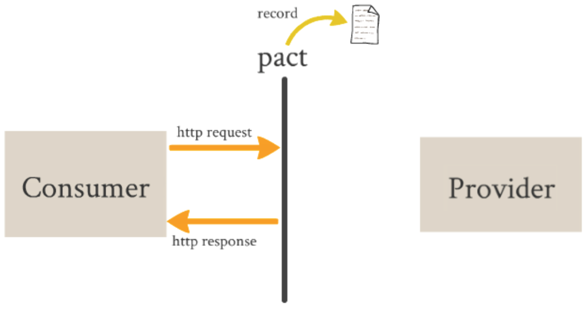
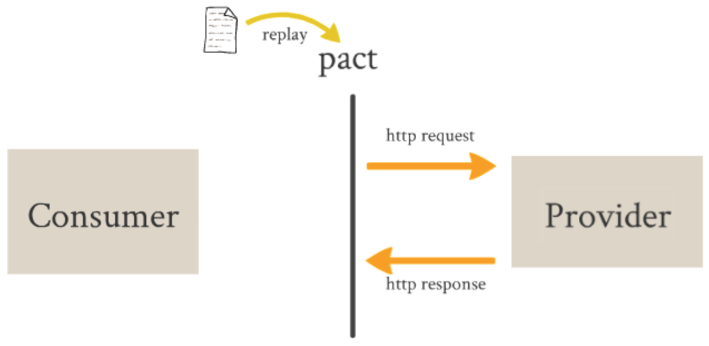

Consider Consumer-Driven Contracts as a Design Pattern.
Problem statement:
How can a web service API reflect its clients' needs
while enabling evolution
and avoiding breaking clients?
[1] Ian Robinson, Consumer-Driven Contracts, Service Design Patterns
How can we prevent breaking changes to services?
[1] Ian Robinson, Consumer-Driven Contracts, Service Design Patterns
The set of integration tests received from all existing consumers represents the service's obligations to its consumer base.
[1] Ian Robinson, Consumer-Driven Contracts, Service Design Patterns
Contracts codify the result of conversations - they don't replace them.
Consumer-Driven Contracts don't make sense everywhere.
They should be used when:
[1] Ian Robinson, Consumer-Driven Contracts, Service Design Patterns
"The similarly named Pact and Pacto are two new open-source tools which allow testing interactions between service providers and consumers in isolation against a contract." [1]
Service consumers define the requests they'll make and the responses they expect back. These expectations are used to run consumer tests against a mock service provider, recording interactions to a pact file.
Recorded interactions with the consumer are played back in the service provider tests to ensure the service provider actually does provide the response the consumer expects.
Spring Boot Microservices + Pact-JVM
git clone git@github.com:brookingcharlie/microservices-pact.git
cd microservices-pact/
./gradlew microservices-pact-consumer:test
less microservices-pact-consumer/target/pacts/Foo_Consumer-Foo_Provider.json
./gradlew microservices-pact-provider:assemble
java -jar microservices-pact-provider/build/libs/microservices-pact-provider-0.0.1.jar
curl -v 'http://localhost:8080/foos/'
./gradlew microservices-pact-provider:pactVerify
vim $(find microservices-pact-provider -name Foo.java)
vim $(find microservices-pact-provider -name Application.java)
./gradlew microservices-pact-provider:assemble
./gradlew microservices-pact-provider:pactVerify
vim $(find microservices-pact-consumer -name ConsumerPort.java)
vim $(find microservices-pact-consumer -name ConsumerPortTest.java)
./gradlew microservices-pact-consumer:test
./gradlew microservices-pact-provider:pactVerify